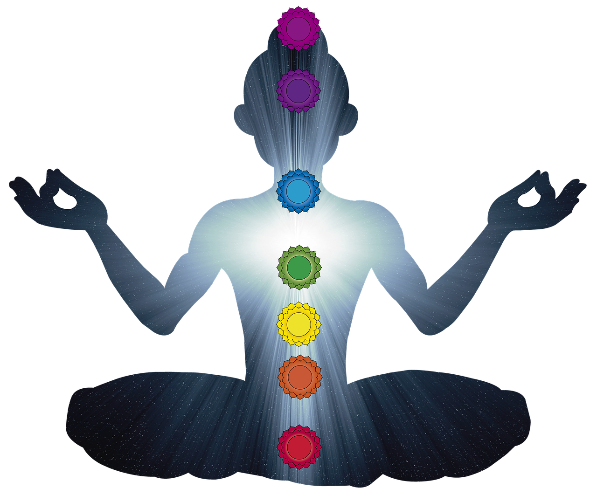
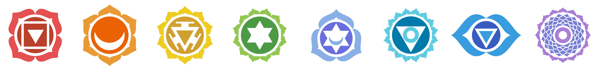
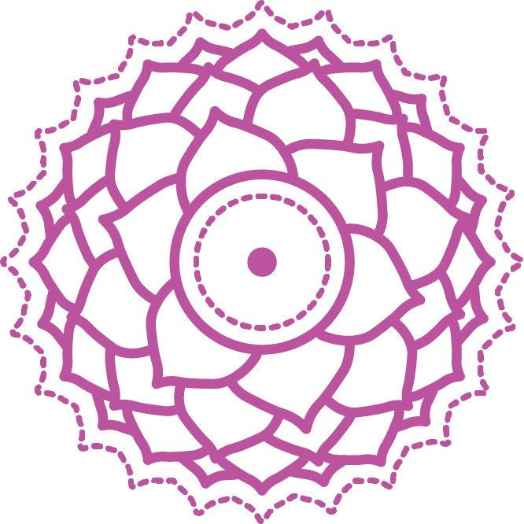
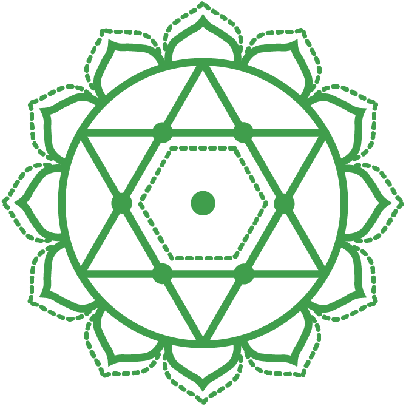
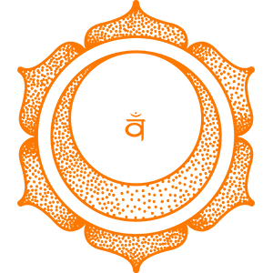
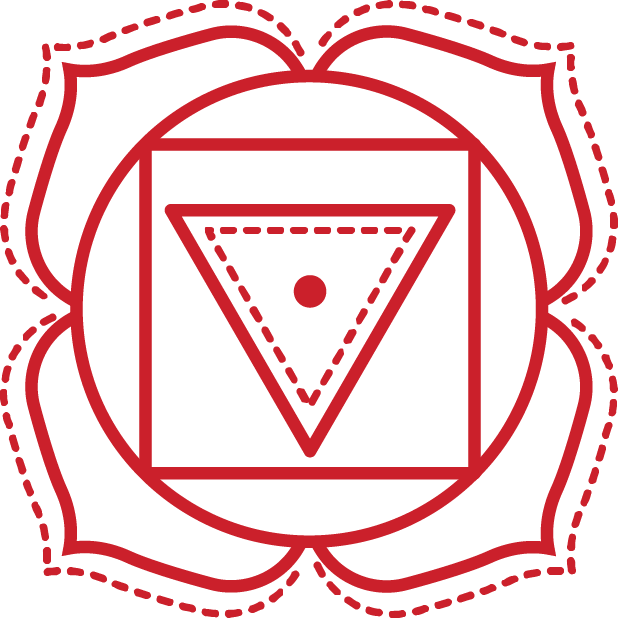

According to Indian yoga theory, although human beings have differences in color and race, these are only superficial distinctions. Outside this visible, material body, we have an invisible, spiritual body.



The first chakra is called the Crown Chakra, which is the Brahma Cave Chakra within one meter above our head, and this chakra is about our spirituality, connection with nature, cosmic connection, enlightenment, cosmic consciousness, celestial unity, and so on.The second chakra is called the Third Eye chakra, the frontal chakra is in the middle of our forehead and both eyebrows, this chakra is about our wisdom, neutrality, insight, intuition etc. This center, sometimes called the third eye, is located in the center of the brain and is white in color with two petals. It takes care of our pineal gland and pituitary gland.The third chakra is called the throat chakra. Located at the base of the neck at the throat, the Throat Chakra is blue in color and has sixteen petals. It takes care of our cervical plexus and thyroid gland.

The fourth chakra is called the Heart Chakra, or the Compassion Chakra, which is located in the center of our heart, known in Chinese medicine as the "Tanzhong Point", and is about our compassion, love, tolerance, acceptance, understanding, and unconditional love.The fifth chakra is called the Solar Plecus Chakra and is at the junction of our two ribs, this chakra is about our power, ego, strength, desires, willpower, etc.

The sixth chakra is called the Sacral chakra, the righteousness chakra is at this place in our navel, and is in charge of our emotions, desire for enjoyment, etc. This chakra is about, interpersonal relationships, and emotional exchanges, and a friend who has a good development of this chakra will be especially kind and gentle and very humane, have good interpersonal relationships, and live in the present.

The seventh chakra is called the Crown Chakra and governs the consciousness of our survival, that is, whether we can survive well in this material world, whether we can integrate well into this society, and survive on earth with our feet on the ground.